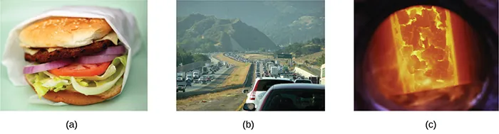
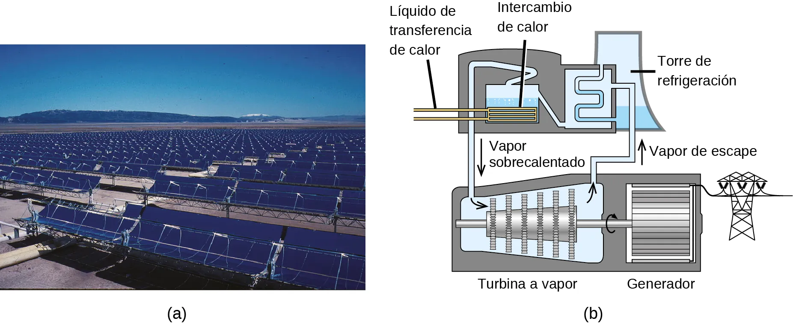
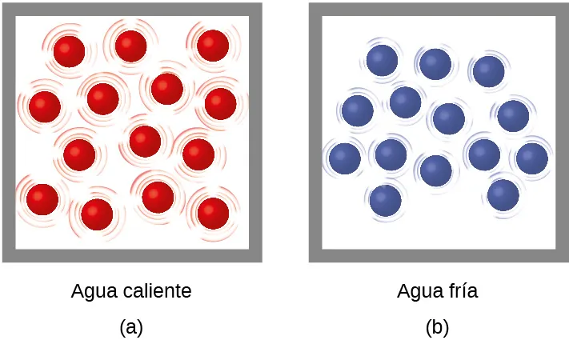
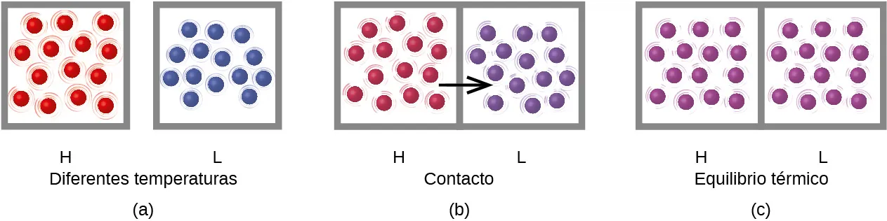
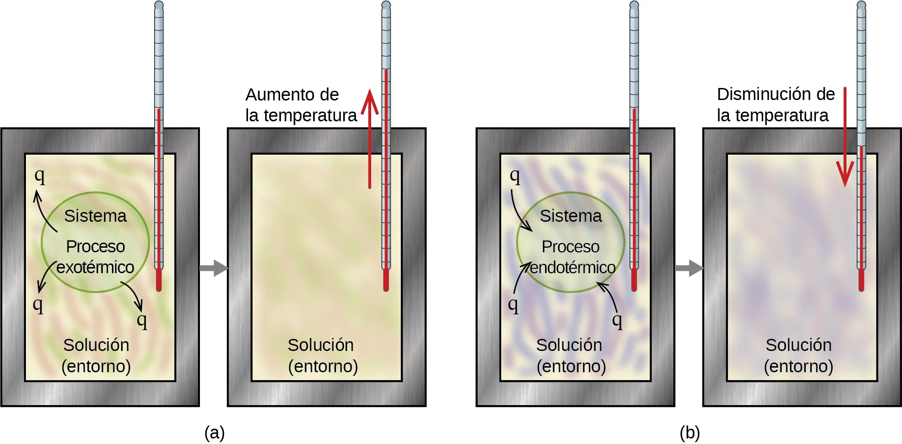
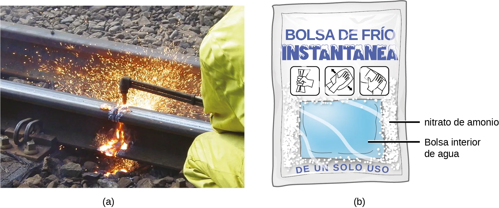
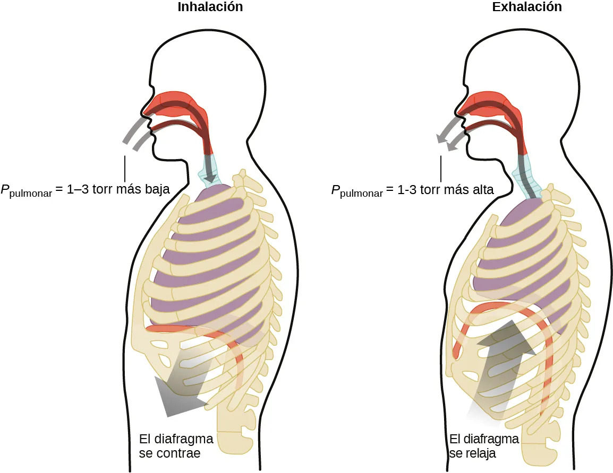

IES Valle del Alberche

📘 Enunciado
Partiendo del principio de conservación de la energía y de las definiciones de calor (\(Q\)) y trabajo (\(W\)) como formas de intercambio de energía entre un sistema y su entorno, demostrar que la variación de la energía interna de un sistema viene dada por:



🎯 Objetivo
Establecer la ecuación fundamental que rige todos los procesos termodinámicos, relacionando la energía interna del sistema con los dos únicos mecanismos de intercambio energético: el calor (flujo de energía por diferencia de temperatura) y el trabajo (flujo de energía por desplazamiento macroscópico). Este principio es la base para analizar cualquier proceso termodinámico en la unidad.
🔬 Procedimiento



- Calor (\(Q\)): flujo de energía debido a una diferencia de temperatura entre el sistema y el entorno.
- Trabajo (\(W\)): flujo de energía debido a fuerzas macroscópicas que producen desplazamientos (expansión, compresión, agitación, etc.).









✅ Resultado
Donde:
- \(\Delta U\): variación de energía interna del sistema (J)
- \(Q\): calor intercambiado (J) — positivo si entra, negativo si sale
- \(W\): trabajo intercambiado (J) — positivo si se realiza sobre el sistema, negativo si lo realiza el sistema


🧪 DESMITIFICANDO el Primer Principio Púlsame
Un sistema absorbe \(450\,\text{cal}\) de calor y, al mismo tiempo, el entorno realiza un trabajo de \(250\,\text{J}\) sobre él. Calcula la variación de energía interna del sistema en julios.
Dato: \(1\,\text{cal} = 4.18\,\text{J}\).
Paso 1: Convertir el calor a julios: \(Q = 450 \times 4.18 = 1881\,\text{J}\).
Paso 2: Identificar signos: \(Q > 0\) (absorbido), \(W > 0\) (trabajo sobre el sistema).
Paso 3: Aplicar \(\Delta U = Q + W = 1881 + 250 = 2131\,\text{J}\).
Resultado: La energía interna aumenta en \(2.13\,\text{kJ}\).

Un gas ideal se calienta a presión constante de \(1.2\,\text{atm}\) desde \(V_i = 5.0\,\text{L}\) hasta \(V_f = 9.0\,\text{L}\). Durante el proceso, la temperatura aumenta en \(60\,\text{K}\).
- a) Calcula el trabajo realizado por el gas (en J).
- b) Si el gas absorbe \(800\,\text{J}\) de calor, determina la variación de su energía interna.
Dato: \(1\,\text{atm·L} = 101.3\,\text{J}\).
a) \(\Delta V = 9.0 - 5.0 = 4.0\,\text{L}\).
\(W = -p \Delta V = -1.2 \times 4.0 = -4.8\,\text{atm·L}\).
Convertimos: \(-4.8 \times 101.3 \approx -486.2\,\text{J}\) (trabajo realizado por el sistema).
b) \(\Delta U = Q + W = 800 + (-486.2) = 313.8\,\text{J}\).
Resultado: La energía interna aumenta en \(314\,\text{J}\).


Se comprime isotérmicamente un gas ideal, realizando un trabajo de \(620\,\text{J}\) sobre el sistema. ¿Cuánto calor intercambia el gas? Indica si lo absorbe o lo cede.
Paso 1: En un proceso isotérmico, \(\Delta U = 0\) (la temperatura no cambia).
Por tanto, \(0 = Q + W \Rightarrow Q = -W\).
Paso 2: El trabajo se realiza sobre el sistema, luego \(W = +620\,\text{J}\).
\(Q = -620\,\text{J}\) (signo negativo: calor cedido).
Resultado: El sistema cede \(620\,\text{J}\) de calor al entorno.

Un gas se expande adiabáticamente realizando un trabajo de \(480\,\text{J}\).
- a) Calcula la variación de su energía interna.
- b) Si el gas contiene 1.5 moles y su \(c_V = 20.8\,\text{J mol}^{-1}\text{K}^{-1}\), ¿cuánto desciende su temperatura?
a) Proceso adiabático: \(Q = 0\) → \(\Delta U = W\).
Expansión → trabajo realizado por el sistema: \(W = -480\,\text{J}\).
\(\Delta U = -480\,\text{J}\) (disminuye la energía interna).
b) \(\Delta U = n c_V \Delta T\) → \(-480 = 1.5 \times 20.8 \times \Delta T\).
\(\Delta T = -480 / (31.2) \approx -15.38\,\text{K}\).
Resultado: La temperatura desciende \(15.4\,\text{K}\).

Un sistema completa un ciclo en el que absorbe \(1.8\,\text{kJ}\) de calor en la primera etapa y cede \(0.9\,\text{kJ}\) en la segunda. En el ciclo, el entorno realiza sobre el sistema un trabajo neto de \(0.4\,\text{kJ}\).
- a) Calcula el calor neto intercambiado.
- b) Verifica si se cumple el primer principio para el ciclo (\(\Delta U = 0\)).
- c) Si no se cumple, ¿qué trabajo neto debería realizar el sistema para que el ciclo sea posible?
a) \(Q_{\text{neto}} = Q_{\text{abs}} + Q_{\text{ced}} = +1.8 + (-0.9) = +0.9\,\text{kJ}\).
b) Para un ciclo, \(\Delta U = 0\), luego debe cumplirse \(0 = Q_{\text{neto}} + W_{\text{neto}}\).
Aquí \(W_{\text{neto}} = +0.4\,\text{kJ}\) (trabajo sobre el sistema).
\(Q_{\text{neto}} + W_{\text{neto}} = 0.9 + 0.4 = 1.3\,\text{kJ} \neq 0\). No se cumple.
c) Para que se cumpla, \(W_{\text{neto}} = -Q_{\text{neto}} = -0.9\,\text{kJ}\) (trabajo realizado por el sistema).
Conclusión: Los datos iniciales son inconsistentes; el trabajo neto debería ser \(-0.9\,\text{kJ}\) para que el ciclo sea válido.

Con un par de multiplicaciones y algo de práctica, esto es más fácil de lo que parece.
(Los detalles sobre lo que entra en las pruebas escritas se publicarán periódicamente en M.Teams).